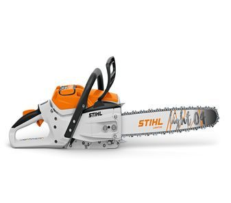
Matériel d'élagage
Vos travaux d'élagage en toute simplicité
Du portatif à la tronçonneuse sur perche, pour un élagage en toute sécurité et pour réaliser facilement et rapidement vos travaux d'élagage.
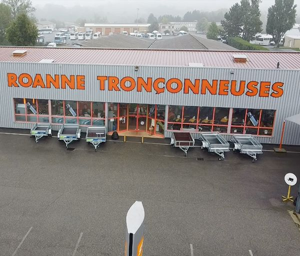
Tondeuses, tronçonneuses, débroussailleuses, micro tracteurs : un showroom de 800 m² au Coteau, et un atelier où l'on répare ce que l'on vend. Pour les particuliers comme pour les professionnels.
Neuf familles de matériel, plusieurs énergies, des terrains qui n'ont rien à voir les uns avec les autres. Quatre questions suffisent à dégrossir, avant de venir en parler au magasin.
Question 1 sur 4
Qu'avez-vous à faire ?
Choisissez la tâche principale. Vous pourrez recommencer autant de fois que nécessaire.
La surface concernée ?
Une estimation suffit.
Comment est le terrain ?
C'est ce qui change le plus souvent la recommandation.
Plutôt batterie ou thermique ?
Si vous hésitez, dites-le : c'est précisément le genre de question qu'on tranche mieux machine en main.
—
Ces repères servent à préparer votre visite, pas à remplacer l'avis d'un technicien : la puissance, la largeur de coupe et le modèle exact se décident machine en main, au magasin. Les familles de matériel citées correspondent à celles réellement distribuées par Roanne Tronçonneuses.
Créée en 1965, notre entreprise Roanne Tronçonneuses, au Coteau, est votre expert du matériel de motoculture pour l'entretien de vos jardins et espaces verts.
Notre équipe vous accueille dans notre showroom de 800 m², où est exposée une très large gamme de tondeuses, de motoculteurs ou encore de micro tracteurs, ainsi qu'un atelier dans lequel nous assurons le SAV, l'entretien et le dépannage de votre matériel de jardin.
Soucieux de vous offrir un large choix, nous sélectionnons avec rigueur les marques les plus performantes du marché, aux meilleurs prix, pour vous. Nous vous proposons des matériels de motoculture autant en neuf qu'en occasion.
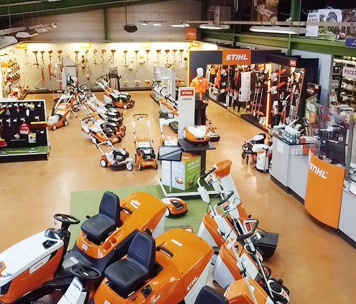
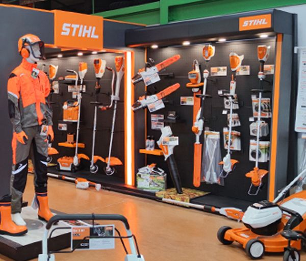
Une large gamme de remorques, micro tracteurs, matériel de tonte, débroussaillage, sciage de bois et taille de haies.
Une sélection d'équipements d'occasion de motoculture et d'élagage, des marques les plus performantes.
Notre atelier est composé de 5 techniciens qualifiés et est équipé aux normes européennes avec des outils performants.
Neuf familles de matériel, en neuf comme en occasion, pour les particuliers et pour les professionnels.
Opter pour la tranquillité que peut vous offrir un robot-tondeuse avec notre marque partenaire STIHL. Gamme de robot à partir de 999 €.
Un large choix de tondeuses. Gamme à batterie, thermique ou électrique.
Une grande gamme de tondeuses autoportées à batterie ou thermique, pour toutes superficies.
Différentes variantes de machines selon la largeur de travail et la puissance moteur. Nos marques partenaires ISEKI et PUBERT (fabrication française).
Gamme de souffleurs pour particuliers et professionnels : dorsal, thermique, batterie, électrique.
Différents modèles pour particuliers et professionnels : batterie, thermique, électrique.
Pour les travaux de fauchage intense, le dépressage en forêt ou débarrasser les mauvaises herbes.
Pour l'entretien régulier des haies : batterie, thermique, électrique, taille-haies sur perche.
Plus besoin de transporter vos encombrants à la déchetterie : le broyeur les réduit en copeaux qui pourront servir de paillis végétal, être utilisés en compost ou pour le chauffage.

Du portatif à la tronçonneuse sur perche, pour un élagage en toute sécurité et pour réaliser facilement et rapidement vos travaux d'élagage.
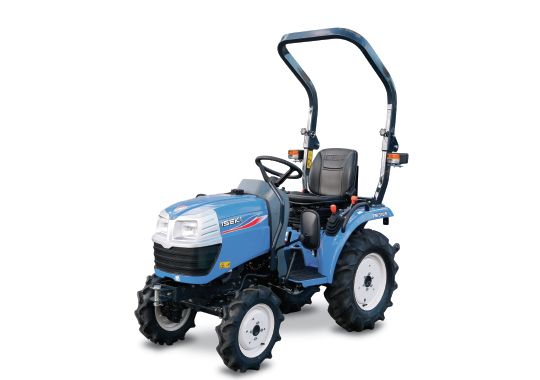
Pour les travaux de traction, le travail du sol et l'entretien des espaces verts, ISEKI propose plusieurs gammes et séries de tracteurs et d'accessoires, pour les professionnels comme pour les particuliers.
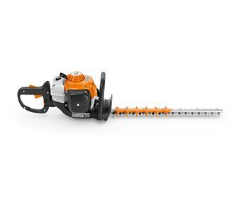
Remorques et accessoires pour vos travaux de transport et de traction, et une gamme complète de taille-haies entretenue par notre atelier toute l'année.
Notre atelier est composé de 5 techniciens qualifiés et est équipé aux normes européennes avec des outils performants. Nous y assurons le SAV, l'entretien et le dépannage de votre matériel de jardin.
Une révision avant la reprise de la tonte, une chaîne à affûter, un démarrage capricieux : décrivez la panne et le créneau qui vous arrange, l'atelier vous rappelle pour confirmer.
Vous préférez le téléphone ? 04 77 68 05 47
Demande de rendez-vous : elle est confirmée par l'atelier selon la charge du moment. Créneaux proposés d'après les horaires d'ouverture publiés.
Découvrez tous nos produits en images, et le magasin tel qu'il est.
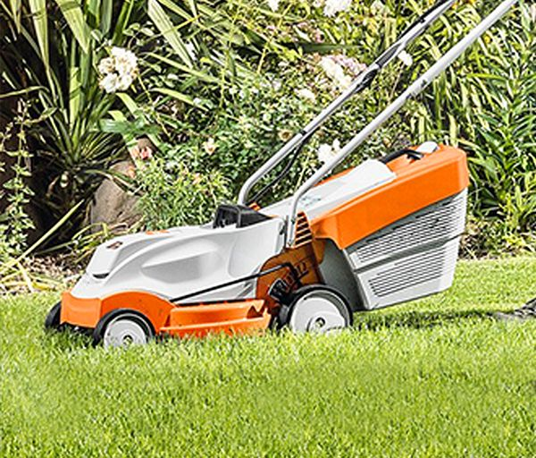
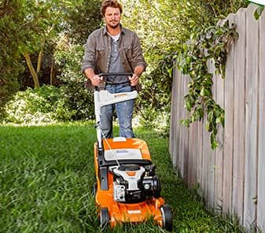
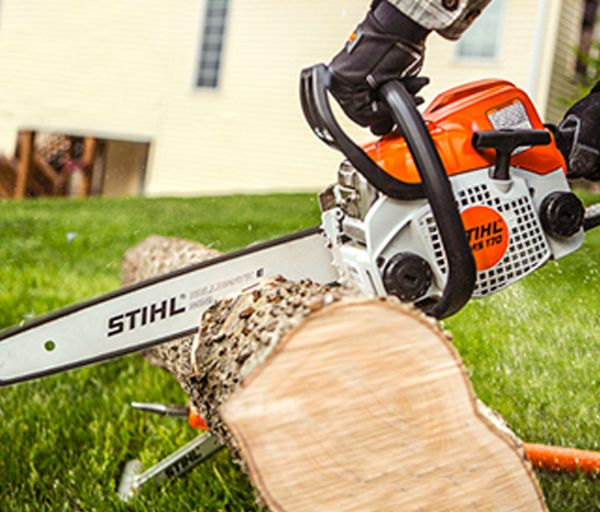
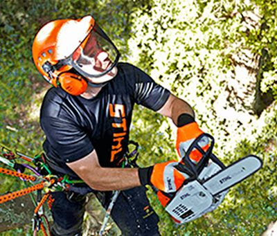
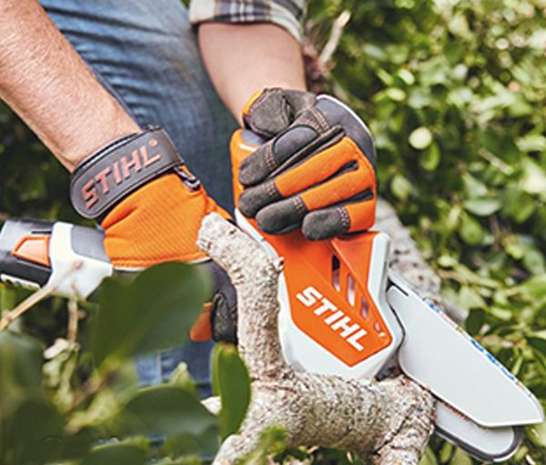
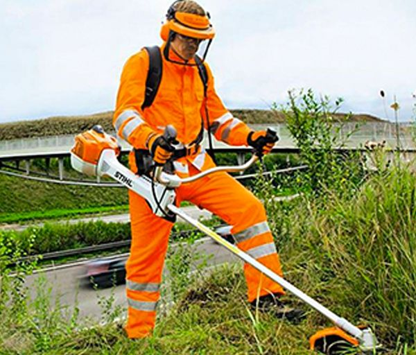
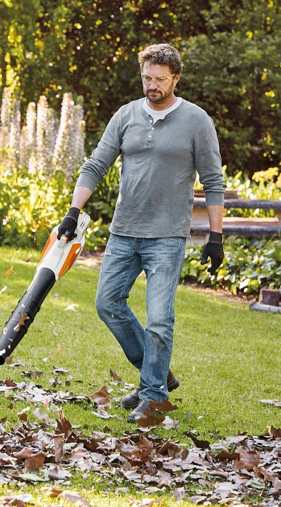
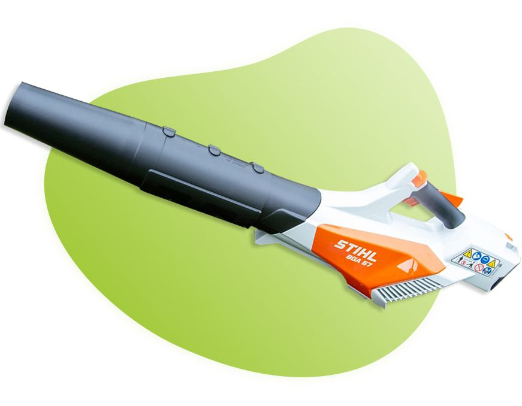
Nos marques partenaires
Cet emplacement est prévu pour être mis à jour depuis le magasin, sans intervention technique : une photo, un prix, une date de fin, et la promotion apparaît en page d'accueil.
Robot de tonte STIHL — à partir de 999 €
Aucune autre offre n'est affichée aujourd'hui : la rubrique « Promotions du moment » du site actuel est vide. Elle est reproduite ici telle qu'elle pourrait vivre, sans qu'aucune offre n'ait été inventée.
| Lundi | 8h30–12h / 14h–18h30 |
|---|---|
| Mardi | 8h30–12h / 14h–18h30 |
| Mercredi | 8h30–12h / 14h–18h30 |
| Jeudi | 8h30–12h / 14h–18h30 |
| Vendredi | 8h30–12h / 14h–18h30 |
| Samedi | 8h30–12h / 14h–18h |
| Dimanche | Fermé |
Formulaire de démonstration : il ouvre votre logiciel de messagerie. Sur le site en ligne, le message arriverait directement dans la boîte du magasin.